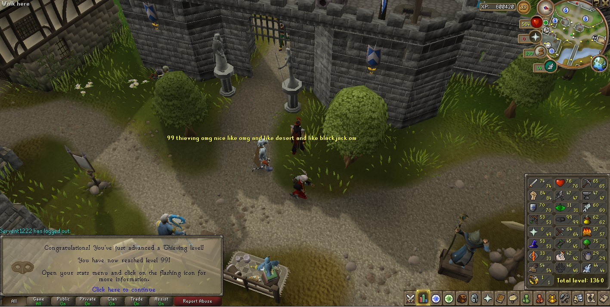
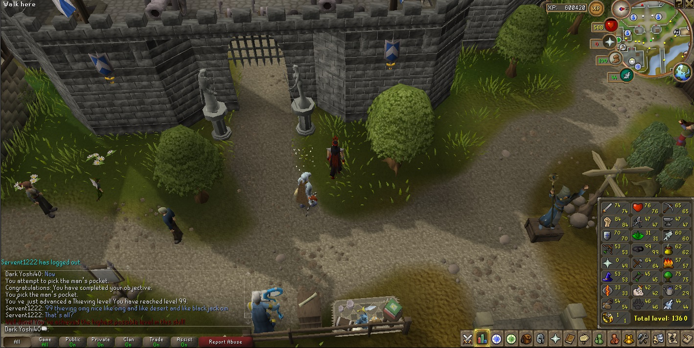

The Internet is Serious Business!
Home > Video Games > PC > RuneScape > My Favorite Skill
After becoming a member, I quickly took a liking to the Thieving skill, and soon afterwards it became my favorite skill in the game. I cannot really explain why I like it so much (perhaps because, through pickpocketing and looting chests, it is the only skill in the game that directly generates coins), but its appeal has never faded for me after all these years. East Ardougne thus became my favorite city, and I would often hang out at the marketplace in the city's east, stealing from the variety of stalls (even the gem stall!); pickpocketing (or killing) the guards, knights, paladins, and heroes; chatting casually with whatever other players were also present; and generally enjoying myself and forming fond memories.
I have known for many years that Thieving is not one of the more popular skills in RuneScape. On the one hand, this was a bit disappointing for me, as there were fewer players in the game with whom I could share and discuss my enthusiasm for the skill; on the other, it gave me a sense of pride and accomplishment over my abnormally high (when compared to most other players) Thieving level relative to my combat level. I can remember a handful of times when my Thieving level was, for example, in the 60s or 70s while my combat level was maybe in the 70s and 80s, and I met other players with a much higher combat level (in the 90s, 100s, or even higher) but who had a rather low Thieving level—oftentimes it would be at or slightly higher than level 53, which indicated that they trained it only to the point when they were permitted to start Desert Treasure, and then largely forgot about the skill afterwards.
Although it's been many years, I can still remember with some accuracy the stages of training I undertook for Thieving:
The last stage listed above I completed in one long marathon session, which lasted from about late March to late April 2010. My journey to maxing out Thieving was spread out over a roughly five-year period and interrupted with breaks, often very long ones; it began around the first few months of 2005 (when I first became a member) and ended on the afternoon of 25 April 2010, which is the last modified date of the two screenshots below which I took to commemorate my achieving level 99 in Thieving:

(You will perhaps notice in the above screenshots that, instead of being in Pollnivneach, I am instead in Lumbridge, where there are no Menaphite thugs. This is because when I was at level 98 Thieving and something like a few hundred experience points away from level 99, I thought it proper to leave Pollnivneach and return to Lumbridge so that I could complete my journey to 99 Thieving by the same method I started it: by pickpocketing men.)


 All written materials on this Web site are my own, and all are released under the Do What the Fuck You Want to Public License Version 2.
All written materials on this Web site are my own, and all are released under the Do What the Fuck You Want to Public License Version 2.
This page last modified on 29 March 2021.